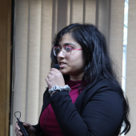

A year-long residential HealthTech fellowship — from clinical wards to market-ready devices.
King George’s Medical University Lucknow (KGMU Lucknow) and the Indian Institute of Technology Kanpur (IIT Kanpur) have united to establish the Department of Biotechnology's (DBT) prestigious School of International Biodesign fellowship: SIB-SHInE.
SIB-SHInE is a dedicated, full-time, year-long residential program. It serves as a national launchpad for assembling multidisciplinary teams comprising doctors, engineers, biomedical instrumentation specialists, and designers.
Under the guidance of clinical department heads, technology mentors, and serial entrepreneurs, fellows conduct deep clinical immersion in hospital wards, uncover authentic unmet needs, engineer working medical devices, file patents, and build new startup ventures.
Clinical immersion at KGMU, prototyping at IIT Kanpur — one continuous build.
Uncover unmet needs in KGMU hospital wards.
Screen needs, prior art and IP strategy.
Prototype and bench-test at IIT Kanpur.
Validate clinically and pitch the venture.
₹60,000/month stipend • IP co-ownership • SIIC incubation • Residential, Lucknow + Kanpur
Head, Dept. of Cardiology, KGMU Lucknow
Professor, BSBE, IIT Kanpur
Clinical home — 4,000 beds and 76 departments for deep clinical immersion.
Engineering home — prototyping labs, testing facilities and SIIC incubation.
Sponsor — ₹60,000/month fellowship stipend and project grants.
Doctors, engineers and designers building MedTech together.

Cohort 1Applications for the current session are closed. See if you qualify for the next cohort.